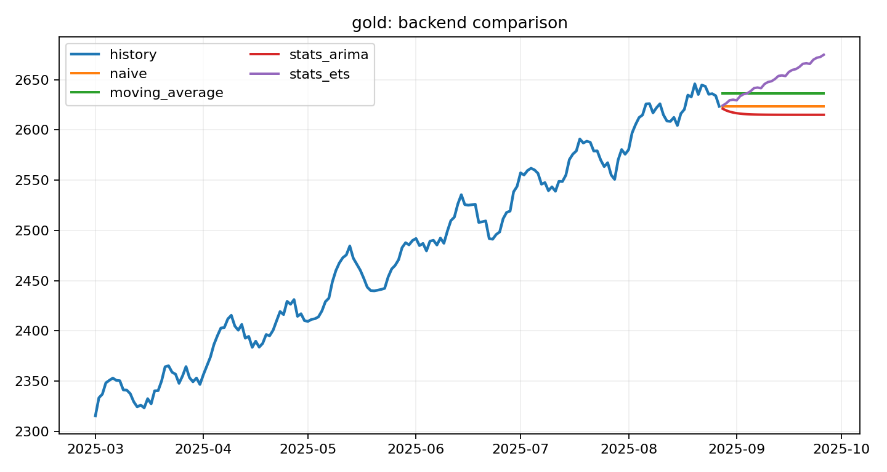
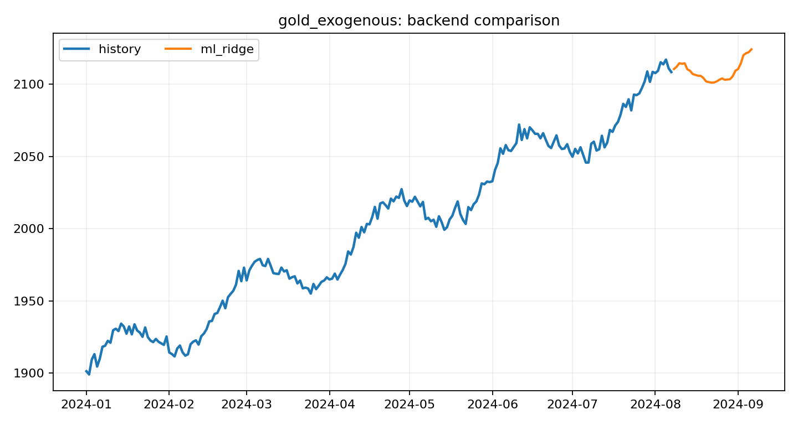
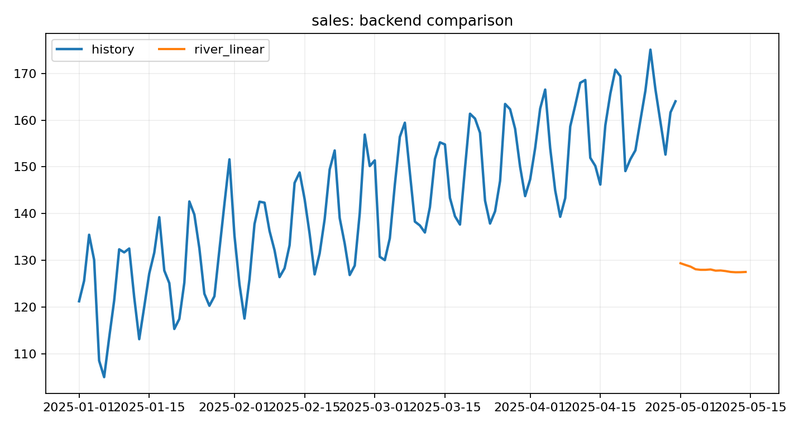
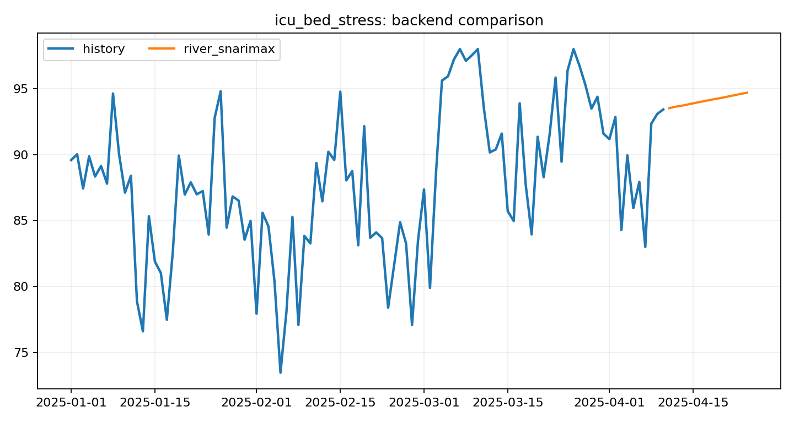

Examples
5Tutorial-grade runs with copied artifacts.
Each example in this gallery is backed by a real run, real artifacts, and a real source script. The goal is not a thin command list. The goal is a reproducible path from idea to forecast pack.
Build the same outputs locally with one command.
This hub pairs a runnable script with published plots, metrics, markdown, CSV, and JSON so the examples are inspectable from several angles.
These cases cover onboarding, backend selection, regression framing, uncertainty, and streaming operations.
Curated runnable cases with copied artifacts, source scripts, and visible diagnostics.

Route a bundled retail series through backend auto-selection and publish charts, CSV, markdown, and JSON.
Curated runnable cases with copied artifacts, source scripts, and visible diagnostics.

Compare baseline, classical, tabular, and streaming backends on one market-style series.
Curated runnable cases with copied artifacts, source scripts, and visible diagnostics.

Turn a sequence with exogenous signals into a supervised regression problem with lag points, spaced delays, rolling windows, and optional tsfresh descriptors.
Curated runnable cases with copied artifacts, source scripts, and visible diagnostics.

Generate interval bands without changing the forecast.csv contract and inspect coverage and width diagnostics.
Curated runnable cases with copied artifacts, source scripts, and visible diagnostics.

Run a streaming backend on ICU bed stress data and publish a drift alert card alongside the forecast pack.